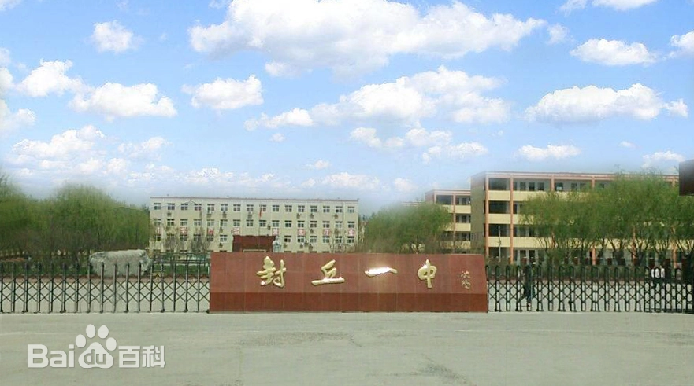

河南省封丘县第一中学简称 封丘一中，创办于1946年，是 河南省示范性普通高中，隶属于封丘县教育体育局，现任校长 贾拥军 。学校现有新老两个校区，占地 370亩，在校生约 9000人，专职教师550人（含特级教师2人、高级教师223人） 。2023年4月纳入河南师范大学附属学校体系 。
学校前身为1946年建立的封丘县中正中学，1951年更名为平原省封丘县初级中学，1956年定现名 。1969年改制为城关公社高中，1977年转为全日制普通高中 。2023年与河南师范大学合作探索“双高”办学模式，增挂“河南师范大学附属封丘一中”校名 。初中部由原王村乡中心学校改制组建 。2023年高考一本上线702人，理科最高分668分，文科最高分634分 。
